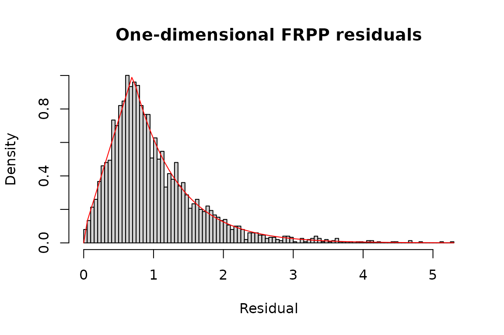
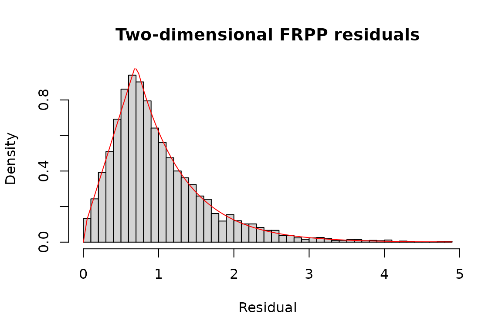
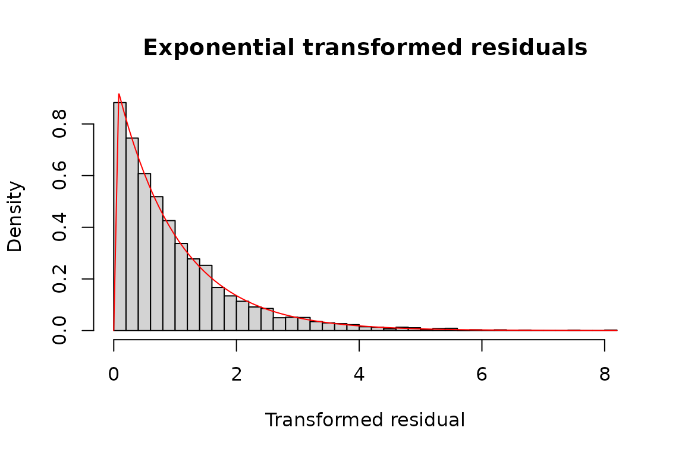
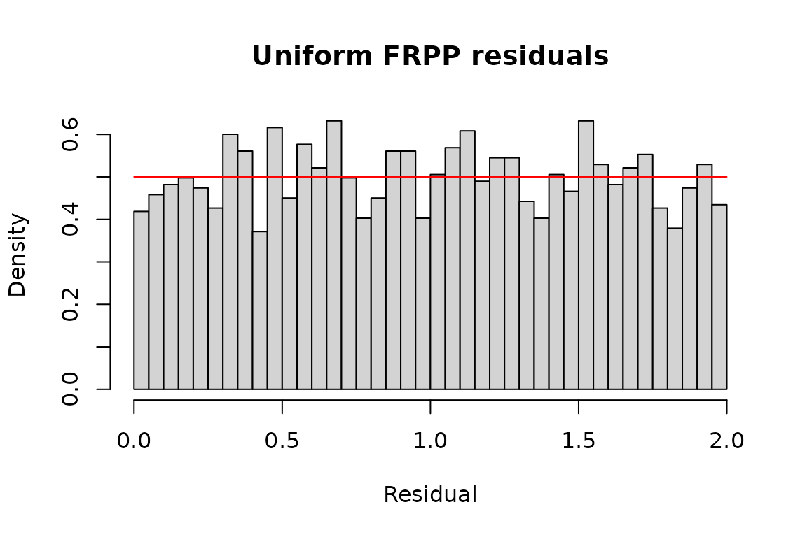

These three examples come from the flexible-residual section of
emhawkes’s Extended examples. Kernel parameters and output
sizes are unchanged. The complete original emhawkes code, including its
custom fitting objective, is preserved in Legacy emhawkes FRPP examples.
FRPP-specific functionality is planned to move here; simple residual-law
models remain supported by emhawkes during the transition.
Each simulation uses seed 1107 explicitly; the original
one-dimensional and uniform examples inherited their random state from
earlier examples. size includes the initial row. The
initial component state is explicitly zero.
The model contains a kernel and a residual law. The default
bridge simulator and likelihood reuse public emhawkes
functions. These examples explicitly select the independent
state simulator when its event-wise kernel APIs are
installed, and report the selected backend. The state likelihood
separately uses public kernel replay, excluding the baseline. Kernel
components are driving quantities, rather than the conditional intensity
of a general FRPP. All dimensions redraw candidate residuals after every
event.
The optional state comparisons require the public shared-kernel API in GitHub development emhawkes 1.0.1.9000. When it is not installed, simulations and bridge likelihoods still run, and state comparisons are reported as unavailable rather than as successful checks.
One dimension: trapezoid-exponential residuals
tz_law <- residual_law(c(a = 0.7, ell = 1.6),
dresidual = emhawkes::dtzexp, presidual = emhawkes::ptzexp,
qresidual = emhawkes::qtzexp, rresidual = emhawkes::rtzexp, name = "tzexp")
model_1d <- fspec(
methods::new("hspec", mu = 0.5, alpha = 1, beta = 1.2), tz_law)
set.seed(1107)
path_1d <- fsim(model_1d, size = 3000, lambda_component0 = 0, backend = simulation_backend)
seed_1d <- .Random.seed
inferred_1d <- logLik(model_1d, path_1d$inter_arrival,
lambda_component0 = 0, infer = TRUE)
state_1d <- if (has_kernel_api) logLik(model_1d, path_1d$inter_arrival,
lambda_component0 = 0, infer = TRUE, backend = "state") else NULL
c(bridge = inferred_1d$loglikelihood,
state = if (has_kernel_api) state_1d$loglikelihood else NA_real_)
#> bridge state
#> 1114.393 1114.393
hist(inferred_1d$res_process1, breaks = 100, probability = TRUE,
main = "One-dimensional FRPP residuals", xlab = "Residual")
curve(emhawkes::dtzexp(x, a = 0.7, ell = 1.6), add = TRUE, col = "red")
Two dimensions: trapezoid-exponential residuals
kernel_2d <- methods::new("hspec", mu = c(0.3, 0.3),
alpha = matrix(c(0.5, 0.8, 0.8, 0.5), 2, byrow = TRUE),
beta = matrix(1.5, 2, 2))
model_2d <- fspec(kernel_2d, tz_law)
set.seed(1107)
path_2d <- fsim(model_2d, size = 10000, lambda_component0 = 0, backend = simulation_backend)
seed_2d <- .Random.seed
inferred_2d <- logLik(model_2d, path_2d$inter_arrival, path_2d$type,
lambda_component0 = 0, infer = TRUE)
state_2d <- if (has_kernel_api) logLik(model_2d, path_2d$inter_arrival, path_2d$type,
lambda_component0 = 0, infer = TRUE, backend = "state") else NULL
c(bridge = inferred_2d$loglikelihood,
state = if (has_kernel_api) state_2d$loglikelihood else NA_real_)
#> bridge state
#> -12413.76 -12413.76
hist(inferred_2d$res_process2, breaks = 50, probability = TRUE,
main = "Two-dimensional FRPP residuals", xlab = "Residual")
curve(emhawkes::dtzexp(x, a = 0.7, ell = 1.6), add = TRUE, col = "red")
hist(inferred_2d$eres_process1, breaks = 50, probability = TRUE,
main = "Exponential transformed residuals", xlab = "Transformed residual")
curve(stats::dexp(x), add = TRUE, col = "red")
Two dimensions: uniform residuals
uniform_law <- residual_law(c(min = 0, max = 2),
stats::dunif, stats::punif, stats::qunif, stats::runif, name = "Uniform(0,2)")
model_uniform <- fspec(methods::new("hspec", mu = c(0.5, 0.5),
alpha = matrix(0.3, 2, 2), beta = matrix(1.2, 2, 2)), uniform_law)
set.seed(1107)
path_uniform <- fsim(model_uniform, size = 5000, lambda_component0 = 0, backend = simulation_backend)
seed_uniform <- .Random.seed
inferred_uniform <- logLik(model_uniform, path_uniform$inter_arrival,
path_uniform$type, lambda_component0 = 0, infer = TRUE)
state_uniform <- if (has_kernel_api) logLik(model_uniform, path_uniform$inter_arrival,
path_uniform$type, lambda_component0 = 0, infer = TRUE, backend = "state") else NULL
c(bridge = inferred_uniform$loglikelihood,
state = if (has_kernel_api) state_uniform$loglikelihood else NA_real_)
#> bridge state
#> -7287.486 -7287.486
hist(inferred_uniform$res_process1, breaks = 50, probability = TRUE,
main = "Uniform FRPP residuals", xlab = "Residual")
curve(stats::dunif(x, 0, 2), add = TRUE, col = "red")
Compare the original and migrated examples
The reference objects below use the original representation. Compare
every simulation field and the final RNG state exactly. The bridge must
return the same inference result. Independent state calculations use a
fixed numerical comparison tolerance of 1e-10; their
absolute differences are also reported.
reference_1d <- emhawkes::set_residual(
methods::new("hspec", mu = 0.5, alpha = 1, beta = 1.2),
param = c(a = 0.7, ell = 1.6), dresidual = emhawkes::dtzexp,
presidual = emhawkes::ptzexp, qresidual = emhawkes::qtzexp,
rresidual = emhawkes::rtzexp)
reference_2d <- emhawkes::set_residual(
methods::new("hspec", mu = c(0.3, 0.3),
alpha = matrix(c(0.5, 0.8, 0.8, 0.5), 2, byrow = TRUE),
beta = matrix(1.5, 2, 2)),
param = c(a = 0.7, ell = 1.6), dresidual = emhawkes::dtzexp,
presidual = emhawkes::ptzexp, qresidual = emhawkes::qtzexp,
rresidual = emhawkes::rtzexp)
reference_uniform <- methods::new("hspec", mu = c(0.5, 0.5),
alpha = matrix(0.3, 2, 2), beta = matrix(1.2, 2, 2),
rresidual = function(size) runif(n = size, 0, 2),
dresidual = function(x, param = numeric(0), log = FALSE) dunif(x, 0, 2, log = log),
presidual = function(q, param = numeric(0), lower.tail = TRUE, log.p = FALSE)
punif(q, 0, 2, lower.tail = lower.tail, log.p = log.p),
qresidual = function(p, param = numeric(0), lower.tail = TRUE, log.p = FALSE)
qunif(p, 0, 2, lower.tail = lower.tail, log.p = log.p))
compare_example <- function(reference, path, seed_after, bridge, state) {
set.seed(1107)
old <- emhawkes::hsim(reference, size = length(path$type), lambda_component0 = 0)
fields <- setdiff(names(old), "hspec")
stopifnot(identical(unclass(path)[fields], unclass(old)[fields]),
identical(.Random.seed, seed_after))
expected <- emhawkes::logLik(reference, old$inter_arrival, old$type,
mark = old$mark, lambda_component0 = 0, infer = TRUE)
stopifnot(identical(bridge, expected))
shared <- names(expected)
if (!is.null(state)) stopifnot(isTRUE(all.equal(state[shared], expected, tolerance = 1e-10)))
data.frame(rows = length(path$type), simulation_backend = simulation_backend,
simulation_exact = TRUE, rng_exact = TRUE,
bridge_exact = TRUE,
state_loglik_difference = if (is.null(state)) NA_real_ else state$loglikelihood - expected$loglikelihood,
maximum_state_output_difference = if (is.null(state)) NA_real_ else max(vapply(shared, function(nm)
if (length(expected[[nm]])) max(abs(state[[nm]] - expected[[nm]])) else 0,
numeric(1))))
}
comparison <- rbind(
tzexp_1d = compare_example(reference_1d, path_1d, seed_1d, inferred_1d, state_1d),
tzexp_2d = compare_example(reference_2d, path_2d, seed_2d, inferred_2d, state_2d),
uniform_2d = compare_example(reference_uniform, path_uniform, seed_uniform,
inferred_uniform, state_uniform))
comparison
#> rows simulation_backend simulation_exact rng_exact bridge_exact
#> tzexp_1d 3000 state TRUE TRUE TRUE
#> tzexp_2d 10000 state TRUE TRUE TRUE
#> uniform_2d 5000 state TRUE TRUE TRUE
#> state_loglik_difference maximum_state_output_difference
#> tzexp_1d -7.048584e-12 7.048584e-12
#> tzexp_2d 5.456968e-12 5.456968e-12
#> uniform_2d 4.947651e-10 4.947651e-10Estimation with ffit
ffit() fits the new composition model. Residual
parameters stay fixed by default; this example explicitly estimates them
jointly. The same six shared parameters, initial state and constraints
as the original example are used. No automatic scale normalization or
Hawkes Hessian stabilization is applied.
A matched 10,000-row validation records the estimates, restoration, curvature diagnostics and elapsed times under explicitly matched optimizer controls.
The long fit is opt-in. Set FRPP_RUN_LONG_EXAMPLES=true
before rendering this vignette to execute it; simulation and likelihood
examples always run.
residual_valid <- function(param) tryCatch({
emhawkes::dtzexp(1, a = param["a"], ell = param["ell"])
TRUE
}, error = function(e) FALSE)
constraints <- list(ineqA = rbind(diag(6), c(0, 0, 0, 0, -1, 0)),
ineqB = c(rep(0, 6), 3))
fit <- ffit(model_2d, path_2d$inter_arrival, path_2d$type,
estimate_residual = TRUE, constraints = constraints, valid = residual_valid,
lambda_component0 = 0)
summary(fit)
fdiagnostics(fit)
fitted_model <- fitted(fit)
fitted_bridge <- do.call(logLik, c(list(object = fitted_model,
inter_arrival = path_2d$inter_arrival, type = path_2d$type), finitial_state(fit)))
fitted_state <- if (has_kernel_api) do.call(logLik, c(list(object = fitted_model,
inter_arrival = path_2d$inter_arrival, type = path_2d$type, backend = "state"),
finitial_state(fit))) else NULL
c(optimized = as.numeric(logLik(fit)), bridge = as.numeric(fitted_bridge),
state = if (has_kernel_api) as.numeric(fitted_state) else NA_real_)
stopifnot(fdiagnostics(fit)$optimizer_success,
isTRUE(all.equal(as.numeric(logLik(fit)), as.numeric(fitted_bridge), tolerance = 1e-10)),
is.null(fitted_state) || isTRUE(all.equal(fitted_bridge, fitted_state, tolerance = 1e-10)))The moving transition of tzexp can make the likelihood
nonsmooth at the estimate. A successful optimizer code does not validate
Hessian-based standard errors. ffit() marks Wald covariance
unavailable when the optimizer curvature is invalid. Profile likelihood
and bootstrap intervals require separate validation.